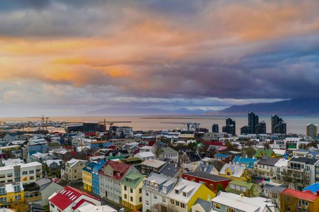
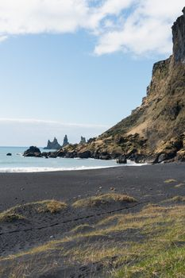
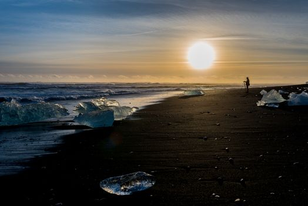
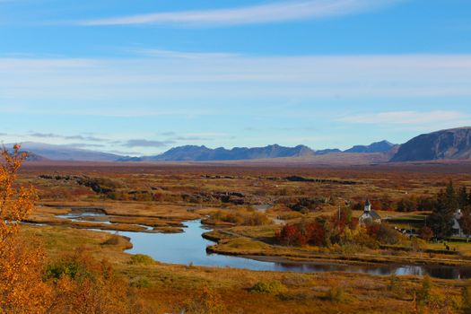
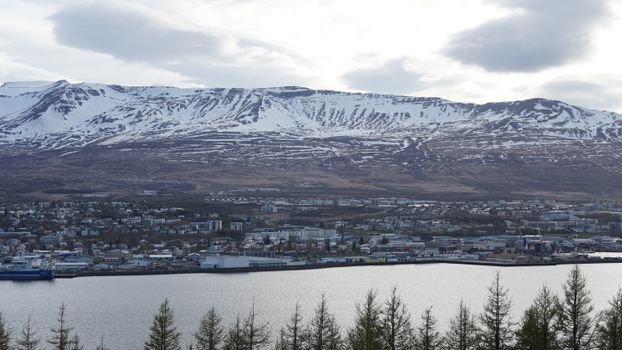

Photo: Vibhavari Bellutagi / Pexels
Most visitors drive Iceland's Ring Road clockwise, because that's the direction Reykjavik's tour buses leave in every morning. It's also the direction most rental counters default to when they hand you a map.
Driving it counterclockwise instead means you're consistently a few hours behind the bulk of that traffic, arriving at the well-known stops after the morning rush has moved on, rather than in the middle of it. It also means the south coast, which has the highest concentration of easily-reached sights on the whole route, ends up at the end of your trip instead of the start. The stretch you're most likely to linger on is the one you're not in a hurry to leave.
The trade-off is minor: a counterclockwise start puts you on the quieter west and Westfjords roads first, before the road opens up into the more dramatic east and south. For a first-time Ring Road trip, that's usually the right order to build up to the highlights rather than front-load them.
The five stops, in order
-

ReykjavikThe loop starts and ends here. -

Vik i MyrdalBlack sand beach, the southernmost stop. -

HofnFishing town under the Vatnajokull glacier. -

EgilsstadirThe east's largest town, Hengifoss a short detour away. -

AkureyriThe unofficial capital of the north.
Stop photos: Stephen Leonardi, Alec Doualetas, Piotr Kowalonek, Brianna Eisman, X1ntao ZHOU / Pexels
A few practical notes worth knowing before you plan the route in detail:
- The Ring Road is a full loop: there's no "wrong end" to start from, only a direction.
- Weather and road conditions vary a lot by season and region; check conditions for the specific stretch you're driving, not just the country as a whole.
- A rental car with the right clearance and tires for the season matters more on this route than on most road trips. This isn't a highway drive the whole way.
- Whether you need an International Driving Permit depends on your home country and the alphabet your license is printed in, not just on Iceland's own rules. Worth checking against your specific license before you fly, not at the rental counter.
- Speed limits are 90 km/h on paved roads, 80 km/h on gravel, and 50 km/h through towns unless a sign says otherwise. They're lower for a reason: gravel shoulders and blind rises are common even on the main road.
- Fuel stations thin out fast once you're past the south coast. Gaps of over 100 km between stations are normal in the east and the highlands, so the habit worth building is topping up at half a tank, not when the light comes on.
Ready to book the loop? The full Ring Road runs 1262 km and about 18.4 hours behind the wheel, so the rental itself matters more here than on a shorter trip.
We book through Auto Europe. It compares Hertz, Sixt and the other major agencies in one search, with cross-border and one-way terms visible before checkout instead of buried in each company's own fine print.
Compare car rental prices →This is an affiliate link. Booking through it may earn Travel Gap a commission at no extra cost to you.
Read the full Europe road trip planning guide for what to check before you book anywhere on the continent.